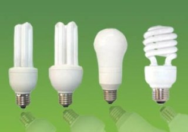
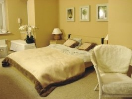
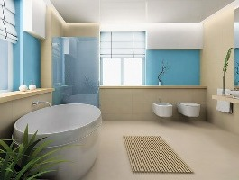
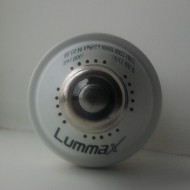
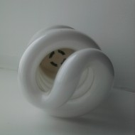
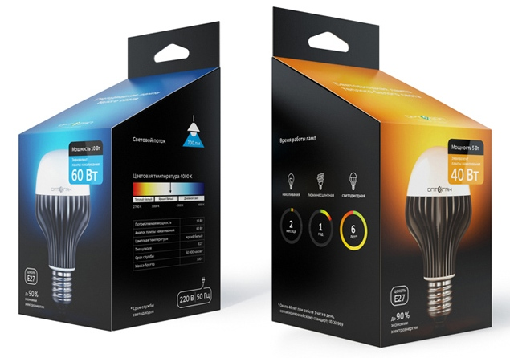

Еще о выборе энергосберегающей электролампы


Продолжая тему энергосбережения в вашем доме давайте рассмотрим энергосберегающие люминесцентные лампы, они же компактные люминесцентные лампы (КЛЛ), а правильно и полно они называются "энергосберегающие компактные люминесцентные лампы с вмонтированным пускорегулирующим устройством".На сегодняшний день на рынке представлен большой ассортимент энергосберегающих люминесцентных ламп. Но как в таком большом количестве практически одинаковых коробочек сделать правильный выбор?
Для начала отмечу, что все энергосберегающие лампы производятся в Китае, исключение только один подвид ламп фирмы Osram(Европа), остальные все производятся в Китае. В Украине также лампы не производят, в редких случаях существует только ручная сборка, но все комплектующие детали поставляются из Китая.
Вроде бы строение энергосберегающей люминесцентной лампы внешне схоже с лампой накаливания – колба и цоколь, но та же колба идет в виде спирали или U-образная, а наиболее существенны различия внутри, т.к. люминесцетные лампы - это разновидность газоразрядных ламп, разряды происходят в лампах с различной частотой, которая регулируется электроникой, так называемым балластом.
Обыкновенные лампы накаливания содержат тонкие металлические нити, которые светятся при прохождении электричества по ним. Однако, 90 % электрической энергии передается в виде тепловой энергии, а не световой.
Современные энергосберегающие лампы работают по-другому: они передают 25 % электрической энергии в виде тепловой, и большую долю - 75% электрической энергии - передают как энергию света.
Теперь давайте перейдем к выбору КЛЛ.
Критерии правильного выбора энергосберегающих люминесцентных ламп:
- температура света. Бывает теплый свет – 2700-3300K, холодный белый - 4200 -5400K, дневной свет - 6500К;
- индекс цветопередачи света показывает насколько естественно и натурально выглядит предмет в свете этой лампы;
- опция «плавный пуск» позволяет лампе загораться через пару секунд и плавно набирать мощность;
- вентиляция балласта – отвод горячего воздуха защищает электронику от перегрева.
А теперь рассмотрим температуру света в зависимости от планируемого места размещения лампы. Если лампа подбирается для столовой, спальни и жилых помещений, то лучше использовать лампы с теплым светом 2700-3300K(мягкий желтоватый свет), привычное домащнее освещение, такой свет придаст уют вашему помещению и расположит к отдыху. Однако, у лампы с теплым светом хуже цветопередача, в таком свете предметы станут несколько темнее.


Если же лампа подбирается для рабочей зоны кухни, кабинета, возле зеркал в ванной или коридорах, то лучше использовать лампу с холодным светом 4200 -5400K(яркий светло-голубой), такой свет более близок к дневному освещению, так как имеет лучше цветопередачу, а поэтому даст возможность более четко рассмотреть все необходимые детали, а также повысит вашу работоспособность.
Также помните, что лучше не использовать в одной зоне интерьера или помещения лампы с разной цветовой температурой, если перепад температуры света заметен глазу, то это может вызвать дискомфорт и негативно отразиться на зрении.
Как говорилось ранее, индекс цветопередачи света лампы характеризует насколько естественно и натурально в этом свете выглядят окружающие нас предметы. Максимальное значение индекса равно 100 - это значит, что при таком свете цвета не искажаются и предметы и даже люди выглядят наиболее естественно и натурально.
Вы, наверное, замечали, что в мясных отделах супермаркетов используется розовая подсветка, в розовом свете мясо выглядит более свежим и аппетитным. А если на этот же кусок мяса посмотреть при дневном или обычном свете вы увидите его в более натуральных цветах.
Опция «плавный пуск» значительно уменьшит износ лампы и продлит срок ее службы, т.к. при подаче питания лампа загорается через пару секунд и только на часть своей мощности, и, в течение нескольких минут плавно выходит на полную мощность. Очевидно преимущество опции «плавного пуска» и при использовании выключателей с подсветкой, так например, лампы без «плавного пуска» при таком выключателе вспыхивают раз в несколько минут, можете заметить, если посмотрите на лампу в темноте.
А теперь о главной причине выхода из строя энергосберегающих люминесцентных ламп – отсутствии вентиляции балласта (электроники). Во время работы лампы больше всего нагревается электроника, которая расположена в пластиковом корпусе. Поэтому при выборе необходимо обратить внимание на наличие вентиляционных отверстий, они обычно расположены в разных частях пластикового корпуса. Например, 20 отверстий возле патрона и 4 под спиралью.


Если же у вас дома уже работающие лампы не имеют вентиляции в пластиковом корпусе, при этом корпус сильно нагревается, пожелтел или источает неприятный запах, то корпус можно самостоятельно доработать с помощью дрели, но понадобиться осторожность при этой работе.
Кроме того, если у вас открытая часть люстры или плафона направлена вниз и горячий воздух скапливается сверху плафона и не может выйти из него, то очень велик риск перегрева лампы и выхода ее из строя. Лучше использовать или максимально открытые плафоны или же плафоны, которые открыты сверху для выхода горячего воздуха.
Существуют умельцы, которые ремонтируют электронную часть лампы, так как за частую при перегреве лампы происходит течь конденсатора, то его меняют на аналогичный.
Есть еще один метод выбора лампы – по спектру свечения. Для
этого необходим обычный компакт-диск. Зажигаем лампу, подносим к ней
компакт-диск и смотрим на образовавшуюся радугу. Если радуга непрерывна –
то лампа хорошая, если радуга состоит из полос с пробелами и нет всех
цветов радуги – то лампа оставляет желать лучшего. Близость к солнечному
спектру определяется качеством люминофора, чем он лучше,тем дороже
лампа.
Что касается производителей, то рекомендуют: Lummax, Наша сила, Aura, Nakai, IKEA, Philips и Osram. Но бывают и индивидуальные случаи. Например, у меня дома, работают MAXUS, VISSON, Lummax и Osram. MAXUS воняет – не хватает вентиляции в балласте, благо, что пользуемся ей редко. А остальными пока довольны.
При покупке детально изучите упаковку, так как лампы даже у одного производителя с разными характеристиками, а упаковки одинаковые. Также спрашивайте о предоставлении гарантии, как правило производители ламп предоставляют гарантию на год. Помните, что если гарантии нет, а лампа перегорела, то вернуть ее вы можете только в течении 2 недель с момента покупки.
И обязательно проверяйте лампочки перед покупкой - если при проверке лампочка мерцает, то лучше ее оставить в магазине.
Вкручивать энергосберегающие люминесцентные лампы следует держа лампу за цоколь, так как стекло у большинства таких ламп тонкое и хрупкое. Но бывают люстры, в которых вкрутить лампу таким способом не представляется возможным, тогда необходимо действовать очень аккуратно и так как трогать лампу за колбу голыми руками не рекомендуется, то лучше действовать в перчатках.
Также помните о ртути, которая содержится в газоразрядной колбе лампы. Ее мало(более чем в 1000 раз меньше, чем в градуснике), но если лампа разбилась в помещении, то лучше проветрить помещение и провести дезинфекцию. Поверхность, на которой лампа разбилась, и близлежащие поверхности протрите 0,2% раствором марганцовки или мыльно-содовым раствором. И еще, помните о специальной утилизации (сдача в пункты приема КЛЛ), иначе вы и ваши соседи можете самостоятельно загрязнить свою окружающую среду.
А ниже мечта покупателей(разработка студии Лебедева) - понятная и хорошая упаковка для ламп, главное отличие по температуре света, а вся информация размещена доступно и читабельно.
